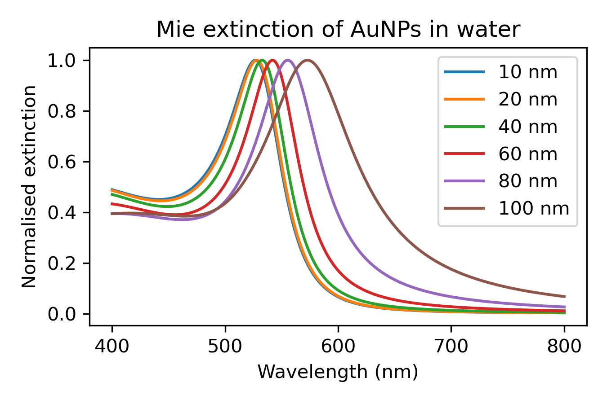
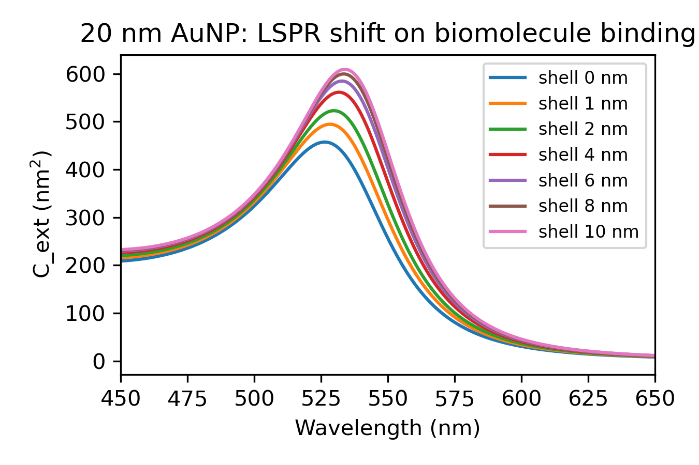
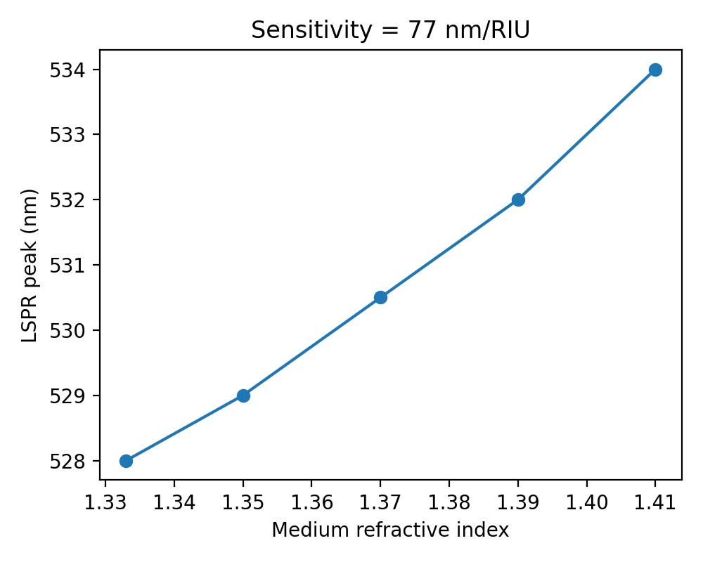
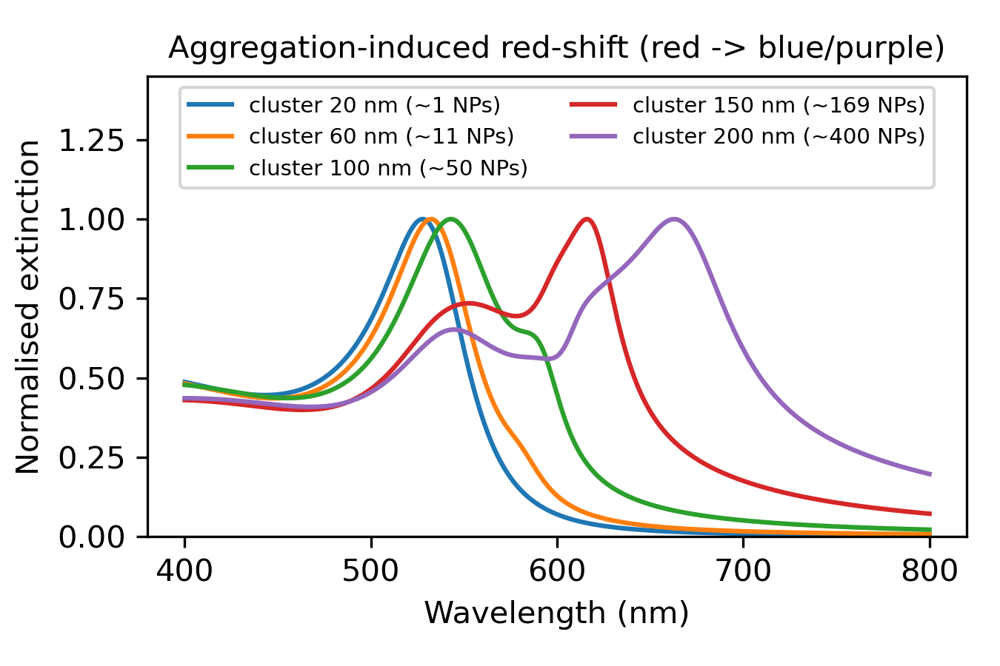

A PROJECT REPORT
Submitted by
SHREEJAN V (RA2311070010025)
Department of Biotechnology
Under the Guidance of
Dr. KARTHIKA P C
Assistant Professor
Department of Physics and Nanotechnology
In partial fulfilment of the requirements for the Degree of
BACHELOR OF TECHNOLOGY
In
BIOTECHNOLOGY
DEPARTMENT OF BIOTECHNOLOGY
COLLEGE OF ENGINEERING AND TECHNOLOGY
SRM INSTITUTE OF SCIENCE AND TECHNOLOGY
KATTANKULATHUR – 603 203
OCTOBER 2026
Department of Biotechnology
SRM Institute of Science & Technology
| Degree / Course | B. Tech Biotechnology |
| Student Name | Shreejan V |
| Registration Number | RA2311070010025 |
| Title of Work | NanoSense: Computational Design of a Gold-Nanoparticle Plasmonic Colorimetric Biosensor for Point-of-Care Diagnostics |
I hereby certify that this assessment complies with the University's Rules and Regulations relating to Academic misconduct and plagiarism, as listed in the University Website, Regulations, and the Education Committee guidelines.
I confirm that all the work contained in this assessment is my own except where indicated, and that I have met the following conditions:
I understand that any false claim for this work will be penalised in accordance with the University policies and regulations.
DECLARATION: I am aware of and understand the University's policy on Academic misconduct and plagiarism and I certify that this assessment is my own work, except where indicated by referring, and that I have followed the good academic practices noted above.
SRM INSTITUTE OF SCIENCE AND TECHNOLOGY
KATTANKULATHUR – 603 203
BONAFIDE CERTIFICATE
Certified that 21NT0404T – Nanotechnology in Societal Development mini-project report titled "NanoSense: Computational Design of a Gold-Nanoparticle Plasmonic Colorimetric Biosensor for Point-of-Care Diagnostics" is the Bonafide work of "Shreejan V [RA2311070010025]" who carried out the mini-project work under my supervision. Certified further, that to the best of my knowledge the work reported herein does not form any other project report or dissertation on the basis of which a degree or award was conferred on an earlier occasion on this or any other candidate.
Dr. Karthika P C
Assistant Professor
Department of Physics and Nanotechnology
SRM Institute of Science and Technology
Kattankulathur
Acknowledgment
I sincerely thank my faculty, Dr. Karthika P C, Department of Physics and Nanotechnology, SRM Institute of Science and Technology, for her guidance and constructive feedback throughout this project. Her teaching of nanoscale phenomena, nano-biosensing and the societal dimensions of nanotechnology gave this work its foundation.
I thank the faculty of the Department of Biotechnology for their encouragement, and my classmates for useful discussions. I acknowledge the open-source scientific Python community (NumPy, SciPy, Matplotlib), whose tools made this simulation possible. AI-assisted tools were used for code drafting and language editing; all results were generated by running the code and checked by me.
Finally, I thank my family for their constant support and motivation.
ABSTRACT
Rapid, low-cost diagnostics are essential for healthcare in resource-limited settings, yet laboratory techniques such as ELISA and PCR need trained staff, instruments and time. Gold nanoparticles (AuNPs) offer an alternative: their localized surface plasmon resonance (LSPR) gives an intense red colour that shifts when biomolecules bind or when particles aggregate, so a result can be read by eye or with a smartphone camera. This project, NanoSense, computationally designs such a sensor. Optical properties of AuNPs in water were simulated using full Mie theory with an analytical Drude–critical-point dielectric model for gold. Four studies were performed: (i) size dependence of the plasmon band, (ii) red-shift due to a protein binding layer using a core–shell model, (iii) bulk refractive-index sensitivity, and (iv) aggregation-induced colour change using Maxwell-Garnett effective-medium clusters. The simulated plasmon peak moved from 526.5 nm (10 nm AuNP) to 573 nm (100 nm); a 10 nm protein shell on a 20 nm AuNP produced a 7.5 nm red-shift; the refractive-index sensitivity was about 77.5 nm/RIU; and aggregation shifted the peak from 528 nm to 663 nm, raising the A620/A520 ratio from 0.04 to 1.67, which corresponds to the visible red-to-blue colour change. The results identify 20–40 nm AuNPs as a good operating point for a paper- or solution-based colorimetric test. Societal benefits, safety, ethical and regulatory aspects are discussed. The complete code is openly available on GitHub for reproducibility.
Keywords: gold nanoparticles, LSPR, Mie theory, colorimetric biosensor, point-of-care diagnostics, nanotechnology and society.
| Chapter | Title |
|---|---|
| 1 | Introduction – 1.1 Problem Statement, 1.2 SDG Relevance, 1.3 Objectives, 1.4 Methodology Overview |
| 2 | Literature Survey |
| 3 | Materials and Simulation Framework |
| 4 | Characteristic Study – Results and Discussion |
| 5 | Societal Impact, Safety and Ethics |
| 6 | Conclusion and Future Scope |
| – | References |
| Fig 4.1 | Mie extinction spectra of AuNPs of different sizes |
| Fig 4.2 | LSPR shift on biomolecule binding |
| Fig 4.3 | Refractive-index sensitivity |
| Fig 4.4 | Aggregation-induced red-shift |
Nanotechnology deals with materials of 1–100 nm, where properties change with size. Gold, chemically inert and yellow in bulk, appears ruby red as nanoparticles because conduction electrons oscillate collectively when illuminated, the localized surface plasmon resonance (LSPR). The resonance wavelength depends on particle size, shape, the surrounding refractive index and the distance between particles. This sensitivity is the basis of the gold-nanoparticle lateral-flow strip used in home pregnancy tests and COVID-19 antigen tests, among the most widespread nano-enabled products in daily life.
Conventional diagnostics (ELISA, PCR, culture) are accurate but need laboratories, cold chains, trained personnel and hours to days. In rural India and other low-resource settings this delays treatment. A sensor that changes colour visibly in minutes would decentralise testing. Designing such a sensor requires knowing which particle size and readout give the strongest, most reliable signal, and that can be explored computationally before costly synthesis.
SDG 3 (Good Health and Well-being): affordable early diagnosis. SDG 9 (Industry, Innovation and Infrastructure): frugal nano-enabled devices. SDG 10 (Reduced Inequalities): diagnostics usable without laboratories narrow the healthcare access gap.
Dielectric model → Mie solver → four virtual experiments (size, binding, refractive index, aggregation) → extraction of peak wavelength, shift and absorbance ratio → interpretation for sensor design. All code is written in Python and runs in under a minute on a laptop.
Mie (1908) solved Maxwell's equations for light scattering by a sphere, explaining the colour of colloidal gold; Bohren and Huffman (1983) gave the standard computational form used here. Johnson and Christy (1972) measured the optical constants of gold, and Etchegoin, Le Ru and Meyer (2006) fitted them with an analytical Drude plus two critical-point model that reproduces gold's interband transitions accurately in the visible.
Mirkin et al. (1996) showed that DNA-linked AuNP aggregation turns a red solution blue, founding colorimetric nano-biosensing. Elghanian et al. (1997) applied it to selective detection of polynucleotides. Link and El-Sayed (1999) reported the size dependence of the plasmon band, a red-shift and broadening for larger particles. Haiss et al. (2007) used UV-Vis spectra to determine AuNP size and concentration. Willets and Van Duyne (2007) reviewed LSPR refractive-index sensing, reporting sensitivities from tens to hundreds of nm/RIU depending on shape. Jain et al. (2006) used Mie and DDA calculations to compare absorption and scattering of gold nanostructures for biomedical use. Posthuma-Trumpie et al. (2009) reviewed lateral-flow immunoassays based on gold labels, now produced at billions of units per year.
Research gap: most student-level work describes AuNP sensors qualitatively. This project builds an open, reproducible model that links particle design choices to the measurable colour signal and connects the result to the course's societal themes (access, safety, regulation).
Spherical gold nanoparticles (10–100 nm) dispersed in water (n = 1.333), the standard citrate-capped AuNPs made by the Turkevich method.
ε(λ) = ε∞ − 1/[λp2(1/λ2 + i/(γpλ))] + Σi=1,2 (Ai/λi)[eiφi/(1/λi − 1/λ − i/γi) + e−iφi/(1/λi + 1/λ + i/γi)], with ε∞ = 1.53, λp = 145 nm, γp = 17000 nm, A1 = 0.94, λ1 = 468 nm, γ1 = 2300 nm, A2 = 1.36, λ2 = 331 nm, γ2 = 940 nm, φ = −π/4 (Etchegoin et al., 2006).
Extinction efficiency Qext = (2/x2) Σ (2n+1) Re(an + bn), with size parameter x = πdnm/λ and relative index m = √ε/nm. The coefficients an, bn are computed from Riccati–Bessel functions (SciPy spherical Bessel functions), summing up to nmax = x + 4x1/3 + 2.
An adsorbed antibody/protein layer is modelled as a shell (n = 1.45) of thickness t = 0–10 nm on a 20 nm core, using the quasi-static coated-sphere polarizability; Cext = k·Im(α).
Analyte-induced cross-linking forms clusters. A cluster of diameter D containing 20 nm AuNPs at gold volume fraction 0.4 is treated as a sphere with a Maxwell-Garnett effective permittivity, and its spectrum is computed with Mie theory (D = 60–200 nm, roughly 11–400 particles). The readout is the absorbance ratio A620/A520 used in experimental AuNP assays.
Python 3, NumPy, SciPy, Matplotlib. Wavelength range 400–800 nm at 0.5 nm resolution. Repository: github.com/shreejan-v/NanoSense-AuNP.

Fig 4.1 Normalised Mie extinction spectra of AuNPs (10–100 nm) in water
| Diameter (nm) | 10 | 20 | 40 | 60 | 80 | 100 |
|---|---|---|---|---|---|---|
| Peak (nm) | 526.5 | 528.0 | 532.5 | 542.0 | 555.5 | 573.0 |
| Max Qext | 0.74 | 1.53 | 3.48 | 5.83 | 7.60 | 7.81 |
The peak stays near 525–530 nm up to 40 nm and red-shifts and broadens for larger particles because of retardation and multipole contributions, matching the trend reported by Link and El-Sayed. Extinction efficiency rises roughly tenfold from 10 to 100 nm. Particles of 20–40 nm combine a sharp band with strong extinction and are the best choice for colorimetric sensing.

Fig 4.2 LSPR shift of a 20 nm AuNP as a protein shell grows
| Shell (nm) | 0 | 1 | 2 | 4 | 6 | 8 | 10 |
|---|---|---|---|---|---|---|---|
| Shift (nm) | 0 | 2.0 | 3.5 | 5.0 | 6.5 | 7.0 | 7.5 |
The shift saturates with thickness because the plasmon near-field decays within about 10 nm of the surface. Binding alone gives only a few nanometres of shift, which a spectrometer can detect but the eye cannot.

Fig 4.3 Peak position vs medium refractive index (20 nm AuNP)
The peak moved from 528.0 to 534.0 nm as n increased from 1.333 to 1.41, giving a sensitivity of about 77.5 nm/RIU, consistent with the tens-of-nm/RIU range reported for small spheres (Willets and Van Duyne, 2007).

Fig 4.4 Spectra of AuNP clusters of increasing size
| Cluster (nm) | 20 (single) | 60 | 100 | 150 | 200 |
|---|---|---|---|---|---|
| ≈ AuNPs | 1 | 11 | 50 | 169 | 400 |
| Peak (nm) | 528.0 | 532.5 | 543.0 | 616.0 | 663.0 |
| A620/A520 | 0.04 | 0.07 | 0.26 | 1.67 | 1.39 |
Aggregation produces a shift of over 130 nm, more than 15 times the binding shift, and moves absorption into the red, so the solution looks purple-blue. The A620/A520 ratio rises about 40-fold, giving a robust yes/no readout that a smartphone camera can quantify. This confirms aggregation as the preferred transduction mode for a low-cost device.
20–40 nm citrate AuNPs functionalised with antibodies or aptamers against a target (e.g., a pathogen antigen). The target cross-links particles, causing a red → blue change within minutes. Readout is by eye, or by smartphone RGB analysis calibrated against A620/A520. The design can be made into a paper strip or a single-tube assay.
This is a simulation study; no particles were synthesised. The quasi-static shell model ignores retardation, Maxwell-Garnett clusters approximate real fractal aggregates, and real samples (blood, saliva) contain proteins that cause non-specific aggregation. Experimental validation (UV-Vis, TEM, DLS, zeta potential) is required.
Benefits: minutes-to-result testing, no electricity needed for visual readout, low material cost (microgram quantities of gold per test), and use by community health workers, which supports decentralised healthcare in rural India.
Safety (nanotoxicology): AuNPs are generally of low acute toxicity, but biopersistence and accumulation in the liver and spleen are concerns for in-vivo use. In this sensor the particles stay in the test device, so exposure is low (Risk = Hazard × Exposure). Disposal of used tests should follow biomedical waste rules to avoid environmental release.
Ethics: false negatives or positives can harm patients, so honest reporting of sensitivity and limits is essential and "nano" claims must not be exaggerated (nano-washing). Smartphone readout raises health-data privacy questions (DPDP Act 2023). Affordable pricing and open designs address the nano-divide.
Regulation: in India, in-vitro diagnostic kits are regulated by CDSCO under the Medical Devices Rules 2017; characterisation should follow ISO/TC 229 and OECD guidance. Safe-by-design principles (stable coatings, minimal gold, recyclable housings) are recommended.
A reproducible Mie-theory framework for gold-nanoparticle plasmonic biosensors was built and used to study size, binding, refractive-index and aggregation effects. Key findings: the plasmon peak shifts from 526.5 to 573 nm as size increases from 10 to 100 nm; protein binding gives a red-shift of at most about 7.5 nm; sensitivity is about 77.5 nm/RIU; and aggregation produces a red-shift of more than 130 nm with a ~40-fold rise in A620/A520. Aggregation-based detection with 20–40 nm AuNPs is therefore the most practical design for a visual, low-cost point-of-care test that serves SDG 3.
Future scope: wet-lab synthesis and validation; anisotropic particles (nanorods, nanostars) for higher sensitivity; DDA/FDTD simulations of realistic aggregates; a machine-learning smartphone colour-reader app; and multiplexed strips for several diseases.